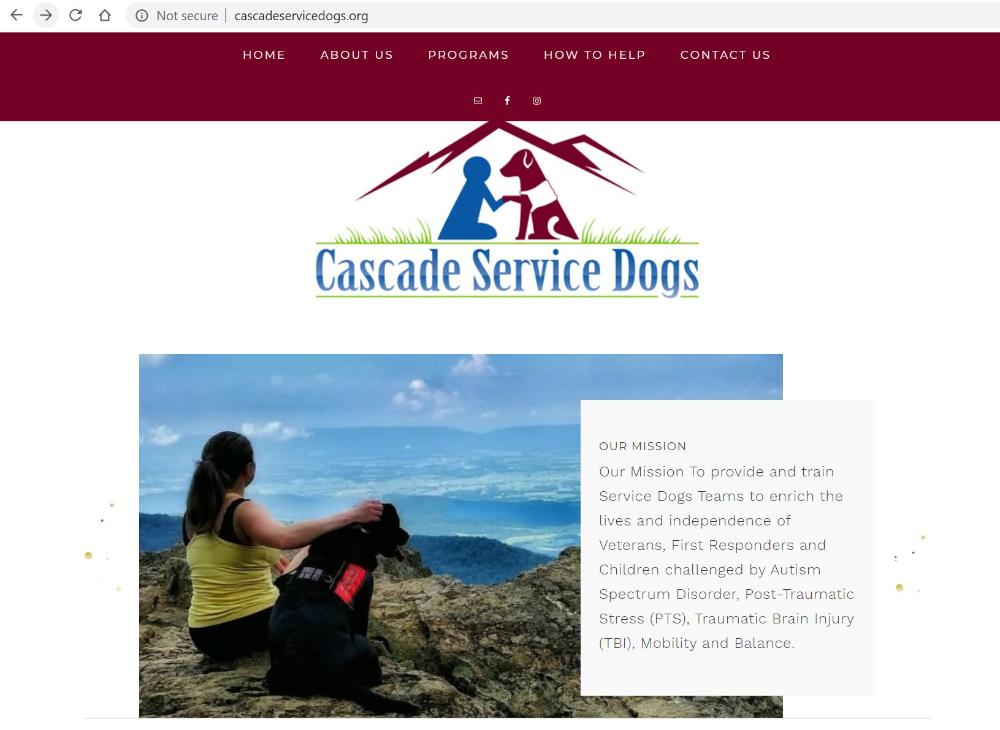
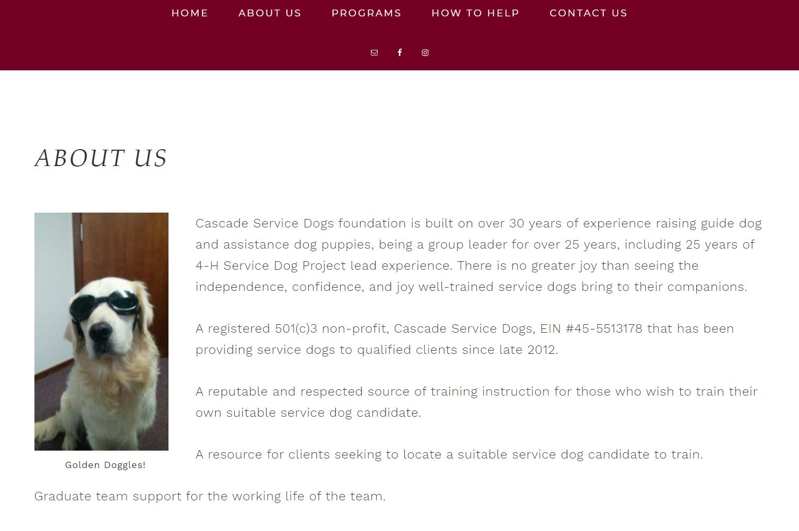
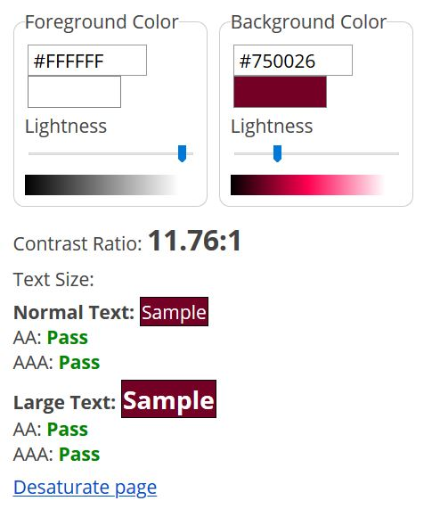
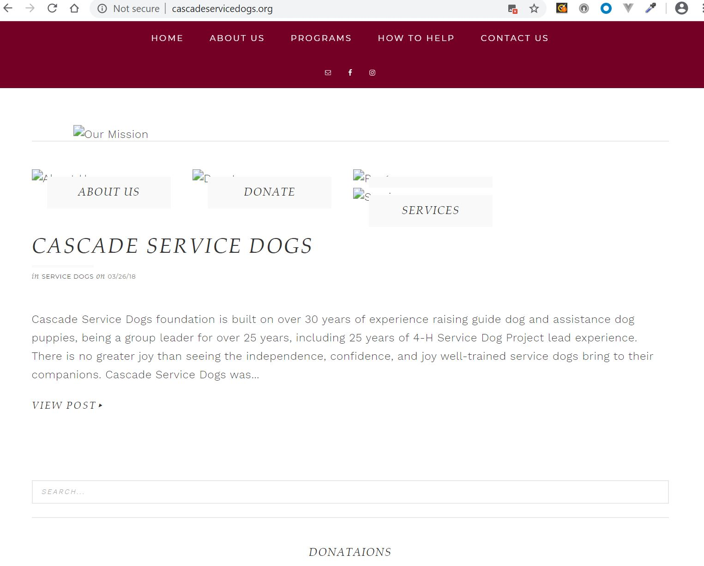
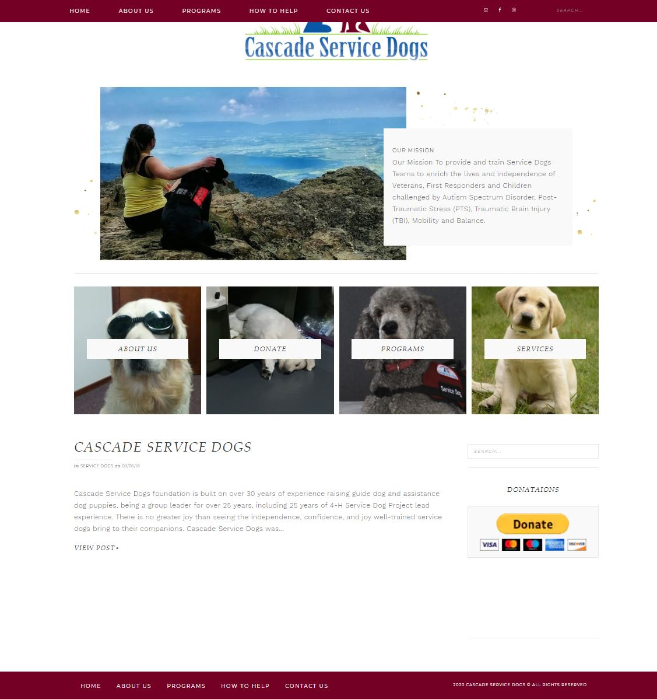
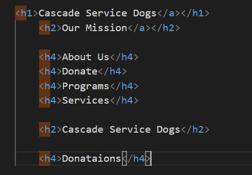
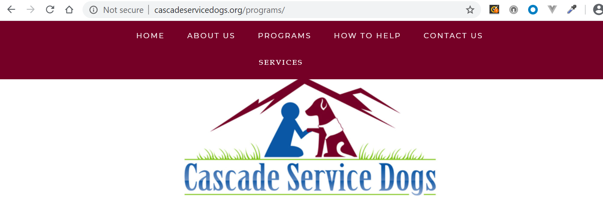

Accessiblity Evaluation for Cascade Service Dogs
Code:
Their website speaks to visitors who may be interested in helping the organization through donations or volunteering. It also aims to connect with qualified individuals who are interested in training service dogs or having one as a companion.
The Cascade Service Dogs website is: http://cascadeservicedogs.org/. This post presents recommendations based on an accessbility evaluation of their website.
 The Home Page for Cascade Service Dogs.Accessiblity Evaluation Overview
Test Methods
The website was evaluated based on Web Content Accessibility Guidelines (WCAG) 2.1, with the assistance of the following tools:
- Web Accessibility Evaluation Tool (WAVE)
- WebAIM's WCAG 2 Checklist
- Chrome Dev Tools
- W3C Markup Validation Service
Accessiblity Successes
Simplicity
 The About Us page has a navigation menu, decorative image (with caption), and text.The Cascade Service Dogs website has a simple structure of navigation menus, text base content, and decorative images. This eliminates the need for alternative instructions or descriptions for things like time-based content, audio, content flashes, animation, and path based gestures.
Color Contrast
 WAVE's contrast tool shows a color ratio of 11.72:1 for Cascade Service Dog navigation menuThe navigation menu has a dark red (#750026) background and white text. This combination has a contrast score of 11:76:1 which meets all of WCAG 2.1 criteria for text contrast. This color combination is highly readable for users.
Alternatives for Images
 The home page with alternative text instead of images.While the images on the site are not essential to understand the structure or content of the site, there are still alt tags for all of them.
Opportunities to Improve Accessiblity
Page Structure
 The home page content includes a mission statement, links to other pages, a blog post, and donations section.  The Cascade Service Dogs Home Page uses header tags, but they do not convey the structure of the page.To improve page navigation, especially with a screen reader, header tags should be used to outline page sections and subsections.
- The h4 headers that are links to other pages should be links or buttons instead of headers. This section could also benefit from an h2 header since this is not subcontent for the "Our Mission" section.
- Rewriting the second h2 tag to "About Cascade Service Dogs" would elimitate duplicating the h1 tag for the page and provide more detail as to the content of that section.
- The donations section is not a subsection of any other part of the page, so it should also have an h2 rather than h4 tag.
Keyboard Navigation
 The "Services" Page is visible only when using a mouse to hover over the "Programs" menu option.While the keyboard can be used to navigate to all menu options, the dropdown for subsections, like "Services", is not visible when the element is selected. To create a better user experience, all selectable elements should be visible when they are selected through keyboard navigation.